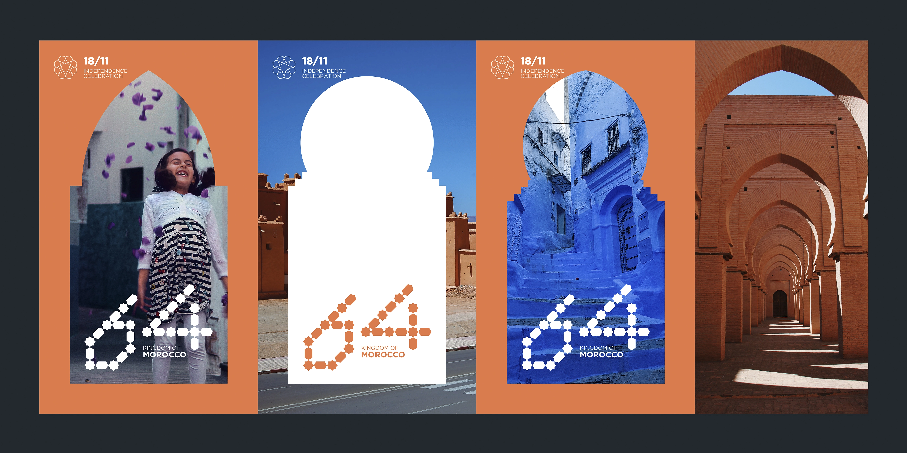
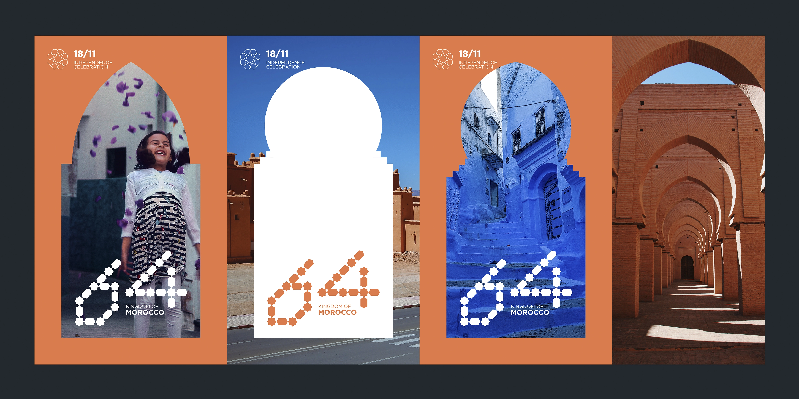

Afrika : Love letters
This self-initiated project celebrates the independence of African countries from colonial rule through the exploration of lettering and letterforms. Comprising over 40 artworks, the project was sparked by the disturbing xenophobic attacks in South Africa targeting fellow African nationals. In response, I began educating myself about each African country, using ancient cultural symbols, art, sculptures, and patterns as a lens to critique their current states. This process also allowed me to uncover shared aesthetics and values across the continent. Ultimately, the project became a journey of learning from the past and from one another, as a way to preserve our identities and celebrate our collective heritage.
 

Morocco 64
On January 11, 1944, Morocco declared its independence. This piece is inspired by the vibrant Moroccan mosaic patterns known as zellij, a centuries-old craft dating back to at least the 700s. These intricate designs are prominent in Moroccan architecture, adorning mosques, gates, and grand palaces. I created this mark to commemorate the 65th anniversary of that historic day.
Liberia 173
Inspired by the face mask of the Dan people of Liberia. It was achieved by using the facial features (eyes and nose) of the mask as a grid. In the Dan society the mask performances pertain to social control, political and judicial matters, peace-making, education, and entertainment. Liberia declared its independence on July 26, 1847.
Gabon 60
Inspired by the Bakota reliquary guardian figures (mbulu ngulu), traditionally the Bakota believe in the ancestors powers of the afterlife.
Chad 60
Inspired by the ancient Wodaabe face tribal scar tattoos which symbolise beauty.
Burkina Faso 60
Inspired by the sun spirit mask of the Bwa people of Burkina Faso, which is used to celebrate the farming season.
Zambia 56
Inspired by the African fish eagle, the national bird of Zambia, the design on 6 is inspired by the waving patterns on the Makenge baskets.

Eritrea 29
Inspired by beautiful hand-made patterns called Tibeb on a Habesha dress. A Habesha dress is a traditional attire won by Habesha women. Throughout the history of Eritrea, women have played an active role.